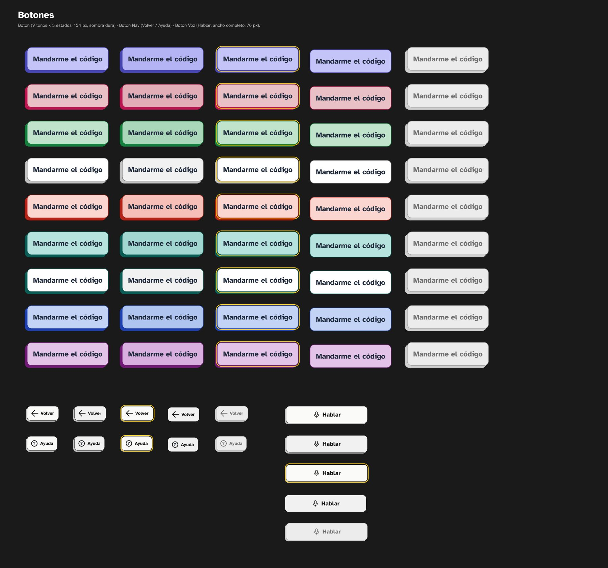

Lo esencial
Botón de 104 px de alto con texto de 32 px en negrita, color del tono de la sección y sombra dura. Teal queda solo para la marca.
El detalle
Versión actual en la app

El botón conserva los 104 px de alto, pero el texto es de 30 px en negrita y suma una sombra dura diagonal (−10, +10) en un tono más oscuro del color. Al presionar se hunde y pierde la sombra. El color pasa a ser el de la sección (índigo, azul, violeta o rosa); el secundario es blanco con borde y sombra gris; los botones chicos (Volver y Ayuda) miden 60 px.
El botón de voz es un componente aparte: Hablar (ancho completo, 76 px).
Actualizado con el prototipo de noviembre de 2026. Registro completo: Decisiones de la app.